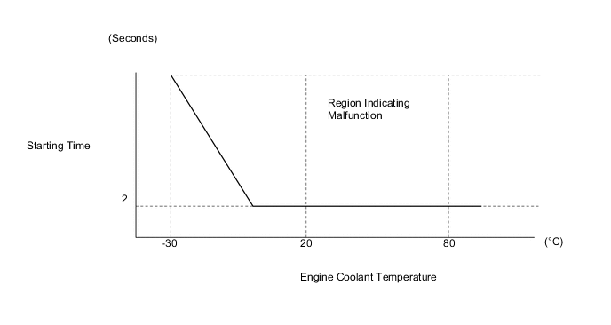

SFI SYSTEM(w/ Canister Pump Module), Diagnostic DTC:P160400
| DTC Code | DTC Name |
|---|---|
| P160400 | Startability Malfunction |
DESCRIPTION
If the engine does not start or it takes a long time for the engine to start, despite the ECM receiving the engine start request signal from the hybrid vehicle control ECU via CAN communication, this DTC will be stored.
| DTC No. | Detection Item | DTC Detection Condition | MIL | Memory | Note |
|---|---|---|---|---|---|
| P160400 | Startability Malfunction | Either of the following conditions is met (1 trip detection logic):
|
Does not come on | DTC Stored | SAE Code: P1604 |

CAUTION / NOTICE / HINT
Tech Tips
-
DTC P160400
-
In contrast to normal malfunction diagnosis for components, circuits and systems, DTC P160400 is used to determine the malfunctioning area from the problem symptoms and freeze frame data when the user mentions problems such as starting difficulty.
As this DTC can be stored as a result of certain user actions, even if the DTC is output, if the customer makes no mention of problems, clear the DTC without performing any troubleshooting and return the vehicle to the customer.
-
If any other DTCs are output, perform troubleshooting for those DTCs first.
-
Since DTC P160400 is different from other DTCs, the following procedure is shown as a reference.
-
DATA LIST / FREEZE FRAME DATA
-
Read freeze frame data using the GTS. The ECM records vehicle and driving condition information as freeze frame data the moment a DTC is stored. When troubleshooting, freeze frame data can help determine if the vehicle was moving or stationary, if the engine was warmed up or not, if the air fuel ratio was lean or rich, and other data from the time the malfunction occurred.
-
When confirming the freeze frame data, be sure to check all multi freeze frame data.
-
When confirming the freeze frame data, if there are multiple items related to the cause of the malfunction, perform troubleshooting for all related items.
-
Try to start the vehicle under the conditions recorded in the freeze frame data which were present when the malfunction occurred. Confirm the data at this time and compare it with the freeze frame data.
-
If the malfunction does not recur, carefully check the vehicle conditions from when the malfunction occurred using freeze frame data.
-
PRECAUTIONS
-
When performing inspections, jiggle the relevant wire harnesses and connectors in an attempt to reproduce malfunctions that do not always occur.
PROCEDURE
-
CHECK ANY OTHER DTCS OUTPUT (IN ADDITION TO DTC P160400)
-
Connect the GTS to the DLC3.
-
Turn the power switch on (IG).
-
Turn the GTS on.
-
Enter the following menus: Powertrain / Engine / Trouble Codes.
-
Read the DTCs.
Powertrain > Engine > Trouble CodesResult Result Proceed to DTC P160400 is output A DTC P160400 and other DTCs are output B Tech Tips
If any DTCs other than P160400 are output, troubleshoot those DTCs first.
B 
GO TO DTC CHART Click here
A 
-
-
CHECK FREEZE FRAME DATA
Tech Tips
Using freeze frame data, confirm the conditions the moment the DTC was stored and after the DTC was stored. This information can be useful when troubleshooting.
-
Connect the GTS to the DLC3.
-
Turn the power switch on (IG).
-
Turn the GTS on.
-
Check the following freeze frame data item to check the state of the auxiliary battery when the freeze frame data was recorded.
Powertrain > EngineTester Display BATT Voltage -
Check the following freeze frame data item to check the engine was cranking when the freeze frame data was recorded.
Powertrain > EngineTester Display Engine Speed -
Check the following freeze frame data items to check temperature data recorded when the engine did not start normally.
Powertrain > EngineTester Display Coolant Temperature Intake Air Temperature -
Check the following freeze frame data items to check the engine operating conditions recorded when the engine started.
Powertrain > EngineTester Display Mass Air Flow Sensor Intake Manifold Absolute Pressure Throttle Position Sensor No.1 Voltage % Throttle Position Sensor No.2 Voltage % Injector Cylinder #1 (Port) Target EGR Valve Position No.1 ISC Learning Value -
Use this information to perform a simulation test.
-
Compare the "Normal Condition" information in the Data List table with the freeze frame data listed above and with the simulation test results to determine the cause of the malfunction.
Result Result Proceed to The cause of the malfunction can be determined A The cause of the malfunction cannot be determined B
A
REPAIR OR REPLACE MALFUNCTIONING PARTS
B
CHECK FOR INTERMITTENT PROBLEMS Click here
-